일반기계기사 (2011-10-02 기출문제)
1과목: 재료역학
1. 다음과 같이 길이 L인 일단고정, 타단지지 보에 등분포하중 ω가 작용할 때, 전단력이 0이 되는 곳은 고정단 A으로 부터 얼마나 되는 곳인가?
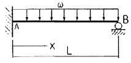
- 3/8L
- 5/8L
- 3/4L
- 2/3L
(정답률: 48%)

2. 두께가 1cm, 지름 50cm의 원통형 보일러에 내압이 작용하고 있을 때, 면내 최대 전단응력이 τmax=-62.5MPa이였다면 내압 P는 몇 MPa인가?
- 5
- 10
- 15
- 20
(정답률: 28%)
3. 길이가 3m이고 지름이 16mm인 원형 단면봉에 30kN의 축하중을 작용시켰을 때 탄성 신장량 2.2mm가 생겼다면 이 재료의 탄성계수는 몇 GPa인가?
- 2.03
- 203
- 1.36
- 136
(정답률: 47%)
4. 회전수 250rpm으로 동력 30kW를 전달할 수 있는 전동축의 최소 지름을 구하면 몇 cm 인가? (단, 허용 전단응력은 30MPa 이다.)
- 5.0
- 5.8
- 6.1
- 6.7
(정답률: 51%)
5. 강재의 인장시험 후 얻어진 응력-변형률 선도로부터 구할 수 없는 것은?
- 안전계수
- 탄성계수
- 인장강도
- 비례한도
(정답률: 47%)
6. 지름 20mm, 길이 1000mm의 연강봉이 30kN의 인장하중을 받을 때 발생하는 신장량의 크기는 약 몇 mm인가? (단, 탄성계수 E=210GPa이다.)
- 0.455
- 4.55
- 0.0455
- 0.00455
(정답률: 49%)
7. 그림과 같이 단순지지보의 중앙에 집중하중 P가 작용하고 있을 때 최대 처짐 δmax는? (단, 보의 굽힘 강성 EI는 일정하고, 자중은 무시한다.)
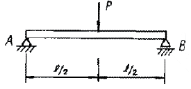
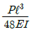
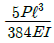
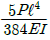
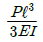
(정답률: 48%)
8. 원형 단면보의 임의 단면에 걸리는 전체 전단력이 V일 때, 단면에 생기는 최대 전단응력은? (단, A는 원형단면의 면적이다.)
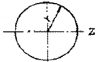
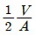
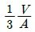
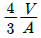
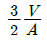
(정답률: 50%)
9. 반경이 r이고 길이가 L인 균일한 단면의 직선축이 전체 길이에 걸쳐 토크 t0를 받을 때, 최대 전단응력은?
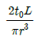
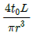
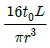
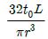
(정답률: 49%)
10. 다음의 선형 탄성 균일단면 돌출보에 발생하는 최대 굽힘모멘트는 몇 kN·m인가?
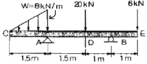
- 3
- 6
- 7.2
- 9.6
(정답률: 36%)
11. 안지름이 80mm, 바깥지름이 90mm이고 길이가 4m인 좌굴 하중을 받는 파이프 압축 부재의 세장비는 얼마 정도인가?
- 93
- 103
- 123
- 133
(정답률: 49%)
12. 그림과 같은 직사각형 단면에서
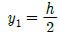
의 위쪽면적(빗금 부분)의 중립축에 대한 단면 1차모멘트 Q는?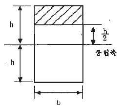
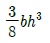
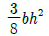
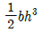
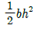
(정답률: 39%)
13. 그림과 같이 반지름이 5cm인 원형 단면을 갖는 ㄱ자 프레임의 A점 단면의 수직응력은 약 몇 MPa 인가?
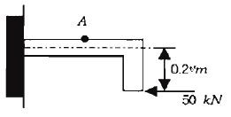
- 75.5
- 85.5
- 95.5
- 1⑤.5
(정답률: 19%)
14. 그림과 같이 삼각형으로 분포하는 하중을 받고 있는 단순보에서 지점 B의 반력은 얼마인가?
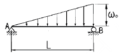
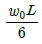
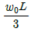
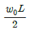
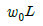
(정답률: 42%)
15. 보의 자유단에 하중 P가 작용할 때, 점 B점에서의 기울기를 구하면? (단, 보의 굽힘 강성 EI는 일정하고, 자중은 무시한다.)
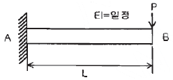
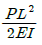
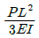
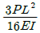
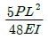
(정답률: 45%)
16. 단면적이 5cm2, 길이가 60cm인 연강봉을 천장에 매달고 20℃에서 0℃로 냉각시킬 때 길이의 변화를 없게하려면 봉의 끝에 몇 kN의 추를 달아 주어야 하는 가? (단, 탄성계수 E=200GPa, 열팽창계수 α=12×10-6/℃, 봉의 자중은 무시한다.)
- 60
- 36
- 30
- 24
(정답률: 55%)
17. 그림과 같이 직사각형 단면을 갖는 외팔보에 발생하는 최대 굽힘응력 σb는?
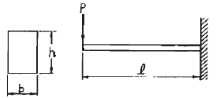
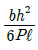
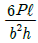
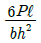
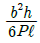
(정답률: 49%)
18. 지름 4cm, 길이 3m인 선형 탄성 원형 축이 600rpm으로 3.7kw를 전달할 때 비틀림 각은 약 몇 도(degree)인가? (단, 전단 탄성계수는 84GPa이다.)
- 0.0085°
- 0.48°
- 1.02°
- 5.08°
(정답률: 50%)
19. 그림과 같이 양단이 고정된 단면적 1cm2, 길이 2m의 케이블을 B점에서 아래로 5mm만큼 잡아당기는데 필요한 힘 P는 약 몇 N인가? (단, 케이블 재료의 탄성계수는 200 GPa이며, 자중은 무시한다.)
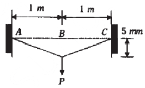
- 0.5
- 1.25
- 2.5
- 5.0
(정답률: 23%)
20. 그림과 같은 막대가 있다. 그 길이는 2.5m이고 힘은 지면에 평행으로 150N만큼 주었을 때 o점에 작용하는 힘과 모멘트는?
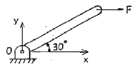
- Fox = 0, Foy = 150 N, Mz = 150 N·m
- Fox = 150 N, Foy = 0, Mz = 187.5 N·m
- Fox = 150 N, Foy = 150 N, Mz = 150 N·m
- Fox = 0, Foy = 0, Mz = 187.5 N·m
(정답률: 50%)
2과목: 기계열역학
21. 증기 터빈에서의 상태 변화 중 가장 이상적인 과정은?
- 가역정압과정
- 가역단열과정
- 가역정적과정
- 가역등온과정
(정답률: 39%)
22. 강성용기 안에 임계 상태의 물 1kg이 들어있다. 온도를 370℃로 낮추면 건도는 약 얼마가 되는가? (단, 임계점 근처의 비체적에 과한 값은 표와 같다.)
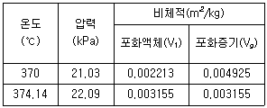
- 0.17
- 0.28
- 0.35
- 0.54
(정답률: 33%)
23. 효율이 85%인 터빈에 들어갈 때의 증기의 엔탈피가 3390kJ/kg이고, 가역 단열 과정에 의해 팽창할 경우에 출구에서의 엔탈피가 2135kJ/kg이 된다고 한다. 운동에너지의 변화를 무시할 경우 이 터빈의 실제 일은 몇 kJ/kg인가?
- 1476
- 1255
- 1067
- 906
(정답률: 40%)
24. 단열된 용기 안에 두 개의 구리 블록이 있다. 블록 A는 10kg. 온도 300K 이고, 블록 B는 10kg, 900K이다. 구리의 비열은 0.4 kJ/kg·k 일 때, 두 블록을 접촉시켜 열교환이 가능하게 하고 장시간 놓아두어 최종 상태에서 두 구리 블록의 온도가 같아졌다. 이 과정 동안 시스템 엔트로피 증가량 ( kJ/K )은?
- 1.15
- 2.04
- 2.77
- 4.82
(정답률: 28%)
25. 카르노 (carnot) 사이클은 열역학적으로 가장 효율이 높은 이상적인 사이클이다. 다음 중 카르노 사이클에서 이루어질 수 없는 과정은 무엇인가?
- 등온팽창
- 교축팽창
- 등온압축
- 단열압축
(정답률: 40%)
26. 실린더에 밀폐된 8kg의 공기가 그림과 같이 P1=800kPa, 체적 V1=0.27m3에서 P2=350kPa, 체적V2=0.80m3으로 직선 변화하였다. 이 과정에서 공기가 한 일은 약 몇 kJ인가?
- 254
- 3⑤
- 382
- 390
(정답률: 46%)
27. 다음 중 압력의 SI 단위로 맞는 것은?
- bar
- Pa
- atm
- torr
(정답률: 40%)
28. 냉동기의 효율은 성능 계수로 나타낸다. 냉동기의 성능 계수에 대한 설명 중 잘못된 것은?
- 성능 계수는 증발기에서 흡수된 열량과 압축기에 공급된 일량의 비로 정의된다.
- 성능 계수는 1보다 클 수 없다.
- 냉동기의 작동 온도에 따라 성능 계수는 변한다.
- 동일한 작동 온도에서 운전되는 냉동기라도 사용되는 냉매에 따라 성능 계수는 달라질 수 있다.
(정답률: 43%)
29. 완전가스의 내부에너지(u)는 어떤 함수인가?
- 압력과 온도의 함수이다.
- 압력만의 함수이다.
- 체적과 압력의 함수이다.
- 온도만의 함수이다.
(정답률: 43%)
30. 100kPa의 포화수 1kg과 100kPa의 포화 수증기 1kg을 각각 500kPa까지 정상류 가역단열압축 하는데 필요한 일을 비교하면?
- 서로 같다.
- 비슷하다.
- 포화수를 압축하는 일이 훨씬 크다.
- 포화 증기를 압축하는데 필요한 일이 훨씬 크다.
(정답률: 15%)
31. 다음 중 온도가 각각 500K , 300K인 두개의 열 저장조 사이에서 작동하는 열기관 또는 냉동기, 열펌프 등에 관한 설명으로 옳은 것은?
- 카르노(carnot) 열기관의 열효율은 25%이다.
- 카르노 냉동기의 성능계수( COP )는 2이다.
- 카르노 열펌프의 성능계수( COP )는 3이다.
- 실제 열기관의 열효율이 15%가 될 수 있다.
(정답률: 48%)
32. 실제 증기 압축식 냉동 시스템에서 고려해야 할 사항 중 잘못된 것은?
- 압축기 입구의 냉매를 약간 과열된 상태로 만든다.
- 냉매가 교축밸브로 들어가기 전에 약간 과냉각시킨다.
- 압축과정 동안 비가역성과 열전달이 존재한다.
- 교축밸브는 증발기에서 멀리 떨어진 곳에 위치시킨다.
(정답률: 30%)
33. 아래 그림에서 T1=561K, T2=1010K, T3=690K, T4=383K인 공기를 작동 유체로 하는 브레이톤 사이클(Brayton cycle)의 이론 열효율은?
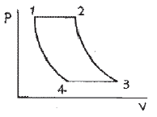
- 0.388
- 0.425
- 0.316
- 0.412
(정답률: 38%)
34. 다음 열역학 제1법칙에 관한 설명 중 틀린 것은?
- 밀폐계가 임의의 사이클을 이룰 때 전달되는 열량의 총합은 행하여진 일량의 총합과 같다.
- 열역학 기초법칙으로 에너지 보존법칙이 성립한다.
- 열은 본질상 에너지의 일종이며 열과 일은 서로 전환이 가능하고, 이 때 열과 일 사이에는 일정한 비례관계가 성립한다.
- 어떤 열원에서 에너지를 받아 계속적으로 일로 바꾸고, 외부에 아무런 흔적을 남기지 않는 기관은 실현 불가능하다.
(정답률: 42%)
35. 공기가 20m/s의 속도로 풍차 속으로 유입되고, 6m/s의 속도로 유출된다. 공기 1kg당 풍차에 한 일은? (단, 입구와 출구의 높이와 온도는 같다고 가정한다.)
- 182 J/kg
- 224 J/kg
- 241 J/kg
- 340 J/kg
(정답률: 40%)
36. 다음 냉동사이클의 에너지 전달량으로 적당한 것은?
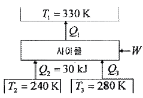
- Q1 = 100 kJ, Q3= 30 kJ, W = 40 kJ
- Q1 = 100 kJ, Q3= 30 kJ, W = 30 kJ
- Q1 = 80 kJ, Q3= 40 kJ, W = 10 kJ
- Q1 = 90 kJ, Q3= 40 kJ, W = 10 kJ
(정답률: 20%)
37. 500℃와 20℃의 두 열원 사이에 설치되는 열기관이 가질 수 있는 최대의 이론 열효율은 약 몇 %인가?
- 4
- 38
- 62
- 96
(정답률: 46%)
38. 폴리트로픽 변화의 관계식 PVn= C 에서 n = 0이면 다음 중 무슨 변화가 되는가?
- 정적변화
- 정압변화
- 등온변화
- 단열변화
(정답률: 47%)
39. 다음 중 증기압축 냉동사이클의 구성품이 아닌 것은?
- 응축기
- 증발기
- 팽창밸브
- 터빈
(정답률: 42%)
40. 진동기에 브레이크를 설치하여 출력 시험을 하는 경우를 생각하자. 축 출력 10kW의 상태에서 1시간 운전을 하고, 이때 마찰열을 20℃의 주위에 전할 때 주위의 엔트로피는 어느 정도 증가하는가?
- 123 kJ/K
- 133kJ/K
- 143kJ/K
- 153 kJ/K
(정답률: 44%)
3과목: 기계유체역학
41. 연직 상방으로 향한 노즐로부터 물이 분출하고 있다. 노즐 출구에서 물의 속도가 20m/s라면 물의 최고 상승 높이는 약 몇 m 인가? (단, 마찰손실은 무시한다.)
- 20.4
- 24.9
- 26.4
- 29.8
(정답률: 46%)
42. 그림과 같은 용기에 수심 2m로 물이 채워져 있다. 이 용기가 연직 상방향으로 9.8m/s22로 가속할 때, B점과 A점의 압력차 PB- PA는 약 몇 kPa인가?
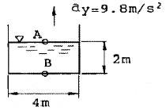
- 39.2
- 19.6
- 9.8
- 78.4
(정답률: 27%)
43. 2차원 유동에서 x, y 방향의 속도를 각각 u, v라 하면 그 유체의 와도(Vorticity)는?
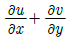
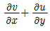
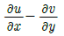
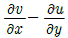
(정답률: 15%)
44. 관경이 10mm인 파이프의 엘보(elbow), 밸브(valve) 등 부차적 손실(minor loss) 계수들의 합이 20이고 파이프의 마찰계수가 0.02일 때 부차적 손실에 상당하는 관의 등가 길이는 몇 m 인가?
- 0.4
- 1
- 10
- 100
(정답률: 42%)
45. 기체의 점성에 가장 크게 영향을 미치는 것은?
- 기체 분자간의 충돌시 에너지 손실
- 기체 분자간의 충돌시 운동량 교환
- 기체 분자간의 작용하는 인력
- 기계 분자의 브라운 운동 속도의 구배
(정답률: 11%)
46. 그림과 같은 밀폐된 탱크안에 비중이 0.7, 1.0인 액체가 채워져 있고, 점 A의 압력이 점 B의 압력보다 6.8kPa 크다면, 경사관의 각도 θ는 약 몇 도인가?
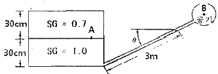
- 12°
- 19.3°
- 22.5°
- 34.5°
(정답률: 27%)
47. 지상에서 압력, 온도가 각각 P=100kPa, T=300K일 때 음속이 347m/s이다. 고도 10 km (P=26kPa, T=223K)에서 음속은 약 몇 m/s 인가?
- 258
- 300
- 347
- 402
(정답률: 25%)
48. 속도와 압력을 같이 측정할 수 있는 장치는?
- 피토정압관(Pitot - static tube)
- LDV
- Hot Wire
- 피에조미터
(정답률: 35%)
49. 10℃의 물이 내경 20mm인 원관 속을 흐를 때 평균 속도가 약 몇 m/s 이하일 때 층류인가? (단, 임계 레이놀즈수는 2320이고, 물의 동점성 계수는 0.013x10-4m2/s 이다.)
- 0.015
- 0.15
- 0.3
- 1.24
(정답률: 47%)
50. 그림과 같은 높이가 4m인 사각형 수문이 있다. 폭을 1.5m라 할 때 수문에 작용하는 힘의 합은 절대값으로 약 몇kN인가? (단, 수면에서 수문 중심까지의 수직거리는 3m이다.)
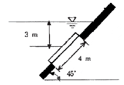
- 18
- 9
- 96.6
- 176.4
(정답률: 35%)
51. 무차원수인 스트라홀 수 (Strouhal numver)와 가장 관련 없는 것은?
- 속도
- 진동수
- 관 지름이나 길이
- 압력
(정답률: 28%)
52. 물을 사용하는 원심 펌프의 설계점에서의 전 양정이 30m이고 유량은 1.2m3/min이다. 이 펌프의 전효율이 80%라면 이 펌프를 설계점에서 운전할 때 필요한 축동력은 몇 kW인가?
- 3.6
- 4.9
- 5.88
- 7.35
(정답률: 40%)
53. 안지름 2.5cm인 관이 안지름 7.5cm인 관에 직접 연결 되어 있다. 이 관속을 비압축성 유체가 정상적으로 유동할 때, 2.5cm관내의 평균유속이 V라면 7.5cm관내의 평균 유속은?
- 3V
- V/3
- V/9
- V/27
(정답률: 35%)
54. 비압축성. 정상유동인 유동장에서 속도성분이 다음과 같이 주어져 있다. u=x2+y2+z2, v=xy+yz+z 이때 z방향의 속도성분 w는 어떻게 되는가?
- ω=-3x-z
- ω=3x+z
- ω=-3xz-(z2/2)+f(x,y)
- ω=-3xz+(z2/2)+f(x,y)
(정답률: 30%)
55. 지름이 70mm인 소방노즐에서 물제트가 50m/s의 속도로 건물 벽에 수직으로 충돌하고 있다. 벽이 받는 힘은 약 몇kN 인가? (단, 물의 밀도는 1000kg/m3 이다.)
- 21.2
- 5.50
- 7.42
- 9.62
(정답률: 45%)
56. 두 평행평판 사이를 점성 유체가 층류로 흐를 때 완전 발달되어 평균 속도가 1.5m/s이면 최대 속도는 몇 m/s 인가?
- 1.0
- 1.25
- 2.0
- 2.25
(정답률: 39%)
57. 길이 100m, 속도 18m/s인 선박의 모형실험을 길이 5m인 모형선으로 프루드(Froude) 상사가 성립되게 실험하려면 모형선의 속도는 약 몇 m/s로 해야 하는 가?
- 1.80
- 4.02
- 0.36
- 36
(정답률: 49%)
58. 지름 0.015m의 구가 공기 속을 28m/s의 속도로 날아가는 경우 항력은 몇 N인가? (단, 공기의 밀도는 1.23 kg/m3, 동점성계수는 0.15cm2/s, 항력계수는 CD= 0.5 이다.)
- 3.56×10-4
- 2.25×10-3
- 4.26×10-2
- 5.64×10-4
(정답률: 46%)
59. 동점성계수가 15.68×10-6m2/s인 유체가 평판 위를 1.5m/s의 속도로 흐르고 있다. 평판의 선단으로부터 0.3m 되는 곳에서의 레이놀즈수는?
- 28700
- 25400
- 22400
- 20400
(정답률: 43%)
60. 점성계수가 0.7 poise이고 비중이 0.7인 유체의 동점성계수는 몇 strokes 인가?
- 0.7
- 1.0
- 1.4
- 2.0
(정답률: 43%)
4과목: 기계재료 및 유압기기
61. 5~20%의 Zn의 황동을 말하며, 강도는 낮으나 전연성이 좋고 색깔이 금색에 가까우므로, 모조 금이나 판 및 선등에 사용되는 구리합금은?
- 톰백
- 7:3 황동
- 6:4 황동
- 니켈황동
(정답률: 60%)
62. 철-탄소계 평형 상태도에서 탄소함유량이 약 6.68%를 함유하고 있는 조직은?
- 시멘타이트
- 오스테나이트
- 펄라이트
- 페라이트
(정답률: 56%)
63. 18-8 스테인리스강에서 입계부식의 원인은?
- 인화물 석출
- 질화물 석출
- 탄화물 석출
- 규화물 석출
(정답률: 59%)
64. 다음 중 서브제로(sub-Zero) 처리에 대한 설명으로 틀린 것은?
- 잔류오스테나이트를 마텐자이트화 한다.
- 공구강의 경도증가와 성능을 향상시킨다.
- 스테인리스강에는 우수한 기계적 성질을 부여한다.
- 충격값을 증가시키고 시효에 의한 치수변화가 생긴다.
(정답률: 58%)
65. 강을 오스템퍼링 처리하면 얻어지는 조직으로서 열처리 변형이 적고 탄성이 증가하는 조직은?
- 펄라이트
- 마텐자이트
- 베이나이트
- 시멘타이트
(정답률: 68%)
66. 다음 중 가공성이 가장 우수한 결정격자는?
- 면심입방격자
- 체심입방격자
- 정방격자
- 조밀육방격자
(정답률: 68%)
67. 고속도강(SKH51)의 담금질 온도(quenchingtemperature)로 가장 적당한 것은?
- 720℃
- 910℃
- 1250℃
- 1590℃
(정답률: 57%)
68. 강의 특수원소 중 뜨임 취성(Temper brittleness)을 현저히 감소시키며 열처리 효과를 더욱 크게 하여 질량효과를 감소시키는 특성을 갖는 원소는?
- Ni
- Cr
- Mo
- W
(정답률: 63%)
69. 다음 중 기계재료를 석출경화 시키기 위해서는 어떠한 예비처리가 가장 필요한가?
- 노멀라이징
- 패텐팅
- 마퀜칭
- 용체화 처리
(정답률: 47%)
70. 탄소강의 탄소함유량(%)을 올바르게 나타낸 것은?
- 0.02 ~ 2.04%
- 2.⑤ ~ 2.43%
- 2.67 ~ 4.20%
- 4.30 ~ 6.67%
(정답률: 48%)
71. 그림과 같은 회로도는 크기가 같은 실린더로 동조 하는 회로이다. 이 동조회로 명칭으로 가장 적합한 것은?
- 2개의 릴리프 밸브를 사용한 동조회로
- 2개의 유량제어 밸브를 사용한 동조회로
- 2개의 유압모터를 사용한 동조회로
- 래크와 피니언을 사용한 동조회로
(정답률: 66%)
72. 다음은 유압 변위단계 선도(도표)이다. 이 선도에서 시스템의 동작순서가 옳은 것은?(단, + : 실린더의 전진, - : 실린더의 후진을 나타낸다.)
- A+B+B- A-
- A-B-B+A+
- B+A+A-B-
- B-A-A+B+
(정답률: 69%)
73. 크래킹 압력(Cracking Pressure)의 설명으로 가장 적합한 것은?
- 압력 제어 밸브 등에서 조절되는 압력
- 체크 밸브, 릴리프 밸브 등에서 압력이 상승하고 밸브가 열리기 시작하여 어느 일정한 흐름의 양이 인정되는 압력
- 체크 밸브, 릴리프 밸브 등의 입구 쪽 압력이 강하하고, 밸브가 닫히기 시작하여 밸브의 누설량이 어느 규정의 양까지 감소했을 때의 압력
- 파일럿 관로에 작용시키는 압력
(정답률: 72%)
74. 다음 공유압 기호의 명칭은 무엇인가?
- 배기구
- 공기구멍
- 회전이음
- 급속이음
(정답률: 52%)
75. 구조상 마모에 대해 압력 저하가 적어 수명이 긴 펌프는?
- 기어 펌프
- 스크루 펌프
- 베인 펌프
- 회전 피스톤 펌프
(정답률: 57%)
76. 그림과 같은 중장비의 버킷이 자유 낙하되는 현상이 나타났을 때, 이를 해결할 수 있는 방법으로 적합한 것은?
- (1)번 실린더에 카운터 밸런스 밸브를 설치한다.
- (1)번 실린더에 시퀀스 밸브를 설치한다.
- (2)번 실린더에 무부하 밸브를 설치한다.
- (3)번 실린더에 감압 밸브를 설치한다.
(정답률: 71%)
77. 유압펌프에서 소음이 발생하는 원인으로 가장 옳은 것은?
- 펌프 출구에서 공기의 유입
- 유압유의 점도가 지나치게 낮음
- 펌프의 속도가 지나치게 느림
- 입구 관로의 연결이 헐겁거나 손상되었음
(정답률: 42%)
78. 관(튜브)의 끝을 넓히지 않고 관과 슬리브의 먹힘, 또는 마찰에 의하여 관을 유지하는 관 이음쇠는?
- 플랜지 관 이음쇠
- 스위블 이음쇠
- 플레어드 관 이음쇠
- 플레어리스 관 이음쇠
(정답률: 65%)
79. 모듈이 10, 잇수가 30개, 이의 폭이 50mm일 때, 회전수가 600rpm, 체적 효율은 80% 인 기어펌프의 송출 유량은 약 몇 m3/min 인가?
- 0.45
- 0.27
- 0.64
- 0.77
(정답률: 13%)
80. 그림과 같은 실린더에서 로드에는 부하가 없는 것으로 가정한다. A측에서 3MPa의 압력으로 기름을 보낼 때 B측 - 출구를 막으면 B측에 발생하는 압력 Pa는 몇 MPa 인가? (단, 실린더 안지름은 50mm, 로드 지름은 25mm 이다. )
- 4.0
- 3.0
- 6.0
- 1.5
(정답률: 48%)
5과목: 기계제작법 및 기계동력학
81. 두께 3mm인 연강판에 지름 40mm 블랭킹 할 때, 소요되는 펀칭력은 약 몇 kN 인가? (단, 강판의 전단저항은 300 N/mm2 이고, 펀칭력은 이론 값에 마찰저항을 가산한다. 마찰저항은 이론값의 5% 정도이다.)
- 113.0
- 118.8
- 116.7
- 102.2
(정답률: 36%)
82. 용접(welding)시에 발생한 잔류응력을 제거하려면 어떤 처리를 하는 것이 좋은가?
- 담금질
- 뜨임
- 파텐팅
- 풀림
(정답률: 41%)
83. 로스트 왁스 주형법(Lost wax process) 이라고도 하며, 제작하려는 제품과 동형의 모형을 양초 또는 합성수지로 만들고, 이 모형의 둘레에 유동성이 있는 조형재를 흘려서 모형은 그 속에 매몰한 다음, 건조가열로 주형을 굳히고, 양초나 합성수지는 용해시켜 주형 밖으로 흘려 배출하여 주형을 완성하는 방법은?
- 다이캐스팅법
- 셀 몰드법
- 인베스트먼트법
- 진공 주조법
(정답률: 43%)
84. 1차로 가공된 가공물의 안지름보다 다소 큰 강구를 압입 통과시켜 가공물의 표면을 소성변형시켜 표면 거칠기가 우수하고 정밀도를 높이는 가공법은?
- 슈퍼피니싱
- 호닝
- 버니싱
- 래핑
(정답률: 52%)
85. 다음 중 물리적인 표면 경화법에 해당하지 않는 것은?
- 화염 경화법
- 고주파 경화법
- 금속 침투법
- 숏 피닝법
(정답률: 38%)
86. CNC 공작기계에서 서보기구의 형식 중 모터에 내장된 타코 제네레이터에서 속도를 검출하고 엔코더에서 위치를 검출하여 피드백 하는 제어방식은?
- 개방회로 방식
- 반 폐쇄회로 방식
- 폐쇄회로 방식
- 디코더 방식
(정답률: 52%)
87. 버니어캘리퍼스에서 어미자 49mm를 50등분한 경우 최소 읽기 값은? (단, 어미자의 최소눈금은 1.0mm 이다.)
- 1/50mm
- 1/25mm
- 1/24.5mm
- 1/20mm
(정답률: 66%)
88. 선반에서 사용하는 칩 브레이커 중 연삭형 칩 브레이커의 단점에 해당하지 않는 것은?
- 절삭 시 이송 범위가 한정된다.
- 연삭에 따른 시간 및 숫돌 소모가 많다.
- 칩 브레이커 연삭시 절삭날의 일부가 손실된다.
- 크레이터 마모를 촉진시킨다.
(정답률: 30%)
89. 일반적인 판금 작업 순서로 옳은 것은?
- 재료 선정 → 전개도 작성 → 판뜨기 → 굽히기 → 자르기 → 접합하기 → 검사
- 재료 선정 → 전개도 작성 → 판뜨기 → 자르기 → 굽히기 → 접합하기 → 검사
- 재료 선정 → 전개도 작성 → 판뜨기 → 자르기 → 접합하기 → 굽히기 → 검사
- 재료 선정 → 전개도 작성 → 판뜨기 → 접합하기 → 굽히기 → 자르기 → 검사
(정답률: 42%)
90. 그림과 같이 삼침을 이용하여 미터나사의 유효지름이(d2)을 구하고자 한다. 다음 중 올바른 식은?
- d2 = M + d + 0.866025P
- d2 = M - d + 0.866025P
- d2 = M - 2d + 0.866025P
- d2 = M - 3d + 0.866025P
(정답률: 41%)
91. 한쪽이 고정된 스프링에 매달린 추가 1초에 5회의 상하 수직 주기운동을 하며 , 초기 진폭이 10mm이고 2초 후의 진폭이 5mm인 경우에 스프링의 감쇠비는 얼마인가?(단, 대수감소는 2πζ로 가정한다.)
(정답률: 12%)
92. 정원의 호스가 그림과 같이 1m 높이에서 13m/s의 일정한 속도로 물을 뿜어내고 있다. H의 최대치는 약몇 m인가? (단, 물은 수평한 지면과 30°의 각도로 뿜어져 나간다.)
- 3.32
- 3.15
- 3.00
- 2.85
(정답률: 35%)
93. 그림과 같이 0점에서 핀으로 지지된 1 자유도 회전진동계의 고유 각진동수 (ωn)를 나타내는 식으로 맞는 것은?(단, k = 스프링상수, I0 = 0점에 관한 막대의 질량 관성모멘트)
(정답률: 32%)
94. 질량 m , 길이 L 의 균일하고 가는 막대 AB가 A 점을 중심으로 회전한다. θ = 60° 에서 정지 상태인 막대를 놓는 순간 막대 AB의 각가속도 (α)는 얼마인가?
(정답률: 34%)
95. 스프링상수 K=1000 N/m인 스프링에 질량 10kg인 물체가 마찰이 없는 수평면 상에서 1 m/s의 속도로 미끄러져서 부딪쳤다면, 스프링의 최대 변형량은 몇 m인가? (단, 스프링의 질량은 고려하지 않는다.)
- 0.1
- 0.2
- 0.4
- 0.8
(정답률: 45%)
96. 무게가 500N, 반지름이 10cm인 균일한 원판형상의 회전체가 있다. 이 회전체의 중심에 대한 질량 관성모멘트는 몇 kg·m2인가?
- 25.5
- 0.255
- 2.55
- 50
(정답률: 38%)
97. 그림과 같이 자동차 A 가 25km/h의 일정한 속도로 동쪽방향으로 달리고 있다. 자동차A가 교차로를 지나는 순간 자동차 B가 교차로의 북쪽으로 30m 지점에서 남쪽을 향해 1.2 m/s2의 가속도로 달리기 시작한다. A가 교차로를 지난 5초 후에 A에 대한 B의 상대속도의 크기는 몇 m/s인가?
- 6.07
- 6.94
- 8.57
- 9.18
(정답률: 12%)
98. 진폭 2mm, 진동수 25 Hz로 진동하고 있는 물체의 최대 가속도는 몇 m/s2인가?
- 12.3
- 24.7
- 37.0
- 49.3
(정답률: 31%)
99. 다음 그림과 같은 진동 측정기의 고유진동수가 측정대상의 진동수에 비해 매우 낮다면 이 측정기에 의해 기록되는 수직방향의 크기는 근사적으로 무엇을 나타내는가?
- 바닥의 변위 크기
- 바닥의 속도 크기
- 바닥의 가속도 크기
- 바닥의 힘 크기
(정답률: 31%)
100. 15000kg의 화물 열차가 우측 1.5m/s의 속도로 움직여서 좌측으로 1.0m/s로 움직이는 12000kg의 탱크차와 서로 결합한다. 화물 열차와 탱크차가 연결 직후에 두 차량의 속도는 얼마인가?
- 우측으로 0.39m/s
- 우측으로 0.50m/s
- 우측으로 0.70m/s
- 우측으로 1.04m/s
(정답률: 35%)
전단력이 0이 되기 위해서는 등분포하중 ω가 좌우 대칭이어야 한다. 따라서, 중심부까지의 거리는 전체 길이 L의 절반인 L/2이다.
하지만 문제에서는 고정단 A으로부터의 거리를 구하라고 했으므로, 중심부까지의 거리인 L/2에서 고정단 A까지의 거리인 L/8을 빼주면, 답은 5/8L이 된다.